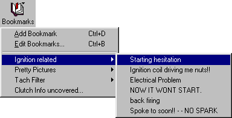

4. Bookmarks
Bookmarks offer a convenient method of viewing threads which you have viewed before and added
to your list of bookmarks. A bookmark
is stored in an easily accessible and editable menu: the Bookmark Menu. You can
rearrange bookmarks at any time and even group related bookmarks in separate folders.
A typical Bookmark Menu looks something like this:

To view a bookmarked thread, click on the Bookmark button:
and select the thread you wish to view.